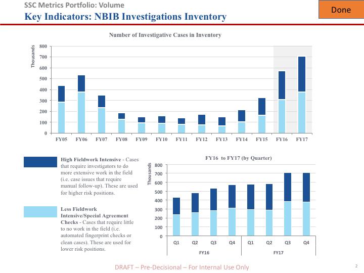
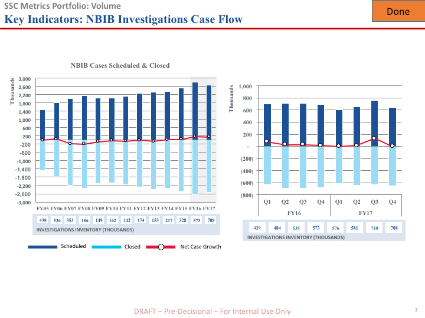
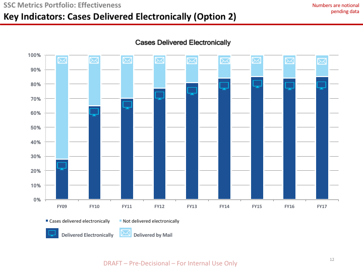
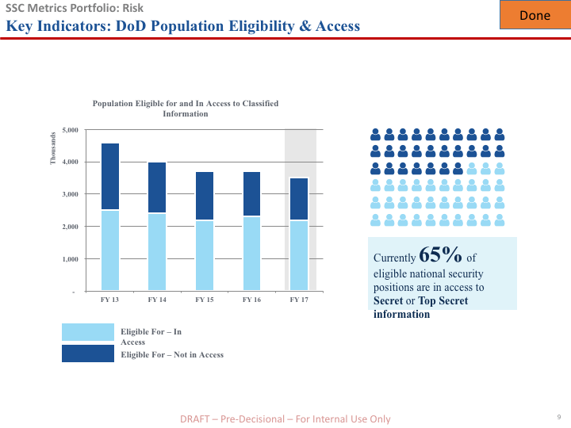
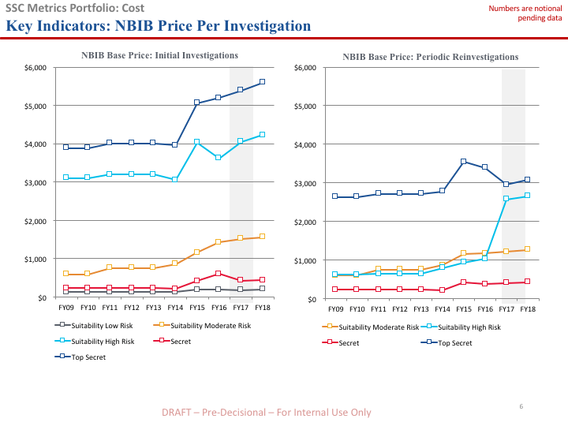

Performance Metrics
The PAC works with agencies to track how well personnel vetting programs and processes are performing.
Volume
National Background Investigations Bureau (NBIB) Investigations Inventory
Shows size of the NBIB investigation case inventory broken out by cases requiring a significant amount of fieldwork and cases requiring little to no fieldwork.
NBIB Investigations Case Flow
Difference in the amount of cases scheduled versus the amount closed. When NBIB closes more than are scheduled, the size of the inventory decreases. When more are scheduled than closed, the inventory increases.
NBIB Investigator Headcount
Estimates the number of Federal and contractor investigators available to perform personnel investigations. The figure serves as a rough indicator for NBIB’s capacity to process investigations.
Timeliness
National Security Process Timeliness
The number of days it took the government to process security clearance requests for new and existing personnel from initiation through the final adjudication decision. Measured at the 90th percentile and broken out by clearance level for initial cases.
Risk
Department of Defense (DoD) Continuous Evaluation Enrollment
Indicates how many DoD personnel are enrolled in its Continuous Evaluation (CE) Program. CE is intended to identify bad or concerning behavior soon after it occurs, rather than years later when an individual undergoes a scheduled reinvestigated. This helps to reduce risk.
Cost
NBIB Price Per Investigation
Captures changes over time in the prices agencies pay to investigate their personnel. These prices are broken out by different levels of investigation.
